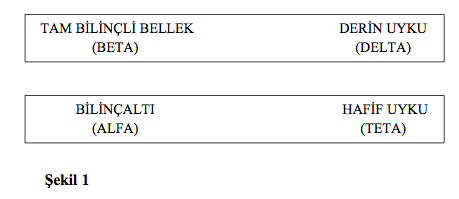

2. BÖLÜM
HİPNOZ FENOMENİ
Hipnozun ne olduğunu anlayabilmek için öncelikle insan beyninin çalışma şekillerini bilmeliyiz. Beyin dört farklı etkinlik düzeyinden oluşur:
Tam bilinçliliğin olduğu ilk bölüme beta adı verilir. Beynimizin bu bölümü her gün yaklaşık 16 saat çalışır ve temel görevi bedenin, kalp atışı, nefes alma, böbrek fonksiyonları, sindirim gibi yaşamsal fonksiyonlarını düzenlemektir. Beta düzeyinin ya da gerçek bilincin yüzde 75’i bu hayati bedensel görevler için çalışır. Dolayısıyla bizim bilinçli düşüncelerimiz olarak bildiğimiz şeyle bilincin yalnızca yüzde 25’i ilgilenir.
İkinci bölüm, bilinçaltı belleğine karşılık gelen ve bizim hipnozda ilgilendiğimiz alfa düzeyidir. Alfa düzeyi yüzde 95’ten yüzde 100’e kadar konsantrasyon etkinliğiyle tanımlanır. Bu, bilinç ya da beta düzeyinin yüzde 25’lik etkinliğinden çok daha üstündür. Alfa düzeyinin faaliyetlerine hipnoz, meditasyon, bedensel geri bildirim, hayal kurma, doğal uykuya geçiş ve uyanma örnek olarak gösterilebilir. Hipnoz, uyku hali değil, beynin doğal bir durumudur. Hipnoz halindeyken bilinciniz tamamen açıktır.
Zihinsel faaliyetlerin bir sonraki bölümü teta olarak adlandırılır. Bu bölüm hafif uyku sırasında faaliyet gösteren bilinçaltının bir parçasıdır. Bilinç kavramı uyanık olma; bilinçaltı ise uyanık ve farkında olmama anlamındadır.
Son düzey, derin uykuya karşılık gelen delta’dır. Bilinçdışı bellek en çok bu düzeyde istirahat eder. Telkinler duyulamaz ve bu durum her gece yaklaşık 30-40 dakika sürer.
Sabah uyandığımızda, doğal hipnozdan (alfa) tam bilince (beta) geçmiş oluruz. Gece uykuya daldığımızdaysa beta’dan (tam bilinçlilik) alfa’ya (doğal hipnoz), sonra teta’ya (hafif uyku), daha sonra delta’ya (derin uyku), teta’ya, daha sonra da alfa’ya geçeriz ve bu döngü böyle kendini tekrar eder.
Hipnoz Edilme
Hipnoz edildiğinizde alfa düzeyinde olursunuz. Peki neler yaşarsınız? Gerçekten hipnotik trans nasıl bir şeydir?
Hipnoz kısaca tam bilinçli belleğinizi bir kenara bırakıp, doğrudan bilinçaltı belleğinizle ilgilenmektir ve hipnozun hiçbir evresinde uykuda olmazsınız.
Beynimizin tam bilinçli hali çalışırken hem bilinçli hem de bilinçsiz belleğimiz faaliyettedir. Üç istisna dışında hipnozun fiziksel deneyimi bilinçli halinizle aynıdır.
